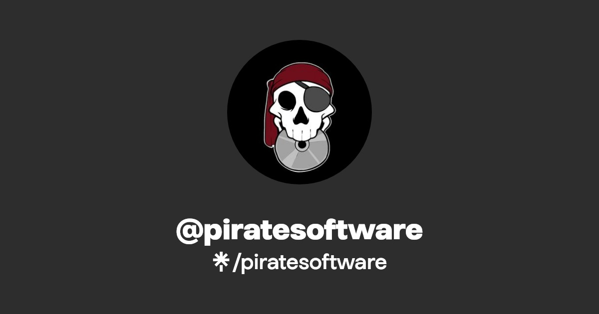

Enlaces que a mi me interesan
Pirate Software
Pirate Software es una empresa de juegos compuesta por tres personas, con el lider siendo Jason Thor Hall. Thor es quien escribe la historia, hace el programmacion y diseña el juego. Bradie Shaye Rehmel es el Artista principal quien dibuja y diseña todos sprites y objetos en los juegos. Stijn Van Wakeren es el diseñador de sonidos y musica, el aumenta todos los ambientes en el juego con su musica.
Twitch
Twitch es una empresa de servicios de entretenimientos online. Personas denominados "Streamers" hacen streaming online para ganarse dinero, hacerse famoso, o incluso promocionar algun producto.
Baidu
百度浏览器是由中国公司百度开发的一款网络浏览器。它提供了个性化的用户界面，承诺快速的性能，并以与百度搜索和新闻服务的集成而著称。它包含安全和隐私功能，尽管一些用户对后者表达了关切。在全球范围内，Google Chrome和Mozilla Firefox等浏览器通常比百度浏览器更受欢迎。

Amazon
Amazon es una empresa online que permite la compra de essentialmente cualquier objeto possible. Creado por Jeff bezos ahora es el web de negocios mas grande del mundo.

Google es mi página favorita
Google es un líder en tecnología y motor de búsqueda en línea, fundado en 1998. Ofrece diversos servicios, como Gmail, Google Drive y Android. Con una sólida presencia en la investigación tecnológica, Google ha transformado la forma en que las personas acceden a la información en la web.

Opera
Opera se destaca por su velocidad y eficiencia, y ha sido conocido por ser pionero en varias características innovadoras en la navegación web. Inicialmente lanzado en 1995, Opera ha evolucionado a lo largo de los años y ha ganado una reputación por su enfoque en la velocidad, seguridad y personalización.
Yahoo
Yahoo es una empresa de tecnología estadounidense conocida por su portal web y servicios en línea. A lo largo de los años, Yahoo ha desempeñado un papel importante en el desarrollo de Internet y ha ofrecido una variedad de servicios, aunque ha experimentado cambios significativos en su dirección y cartera de productos.